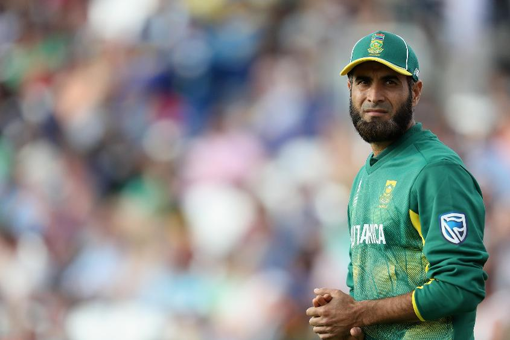
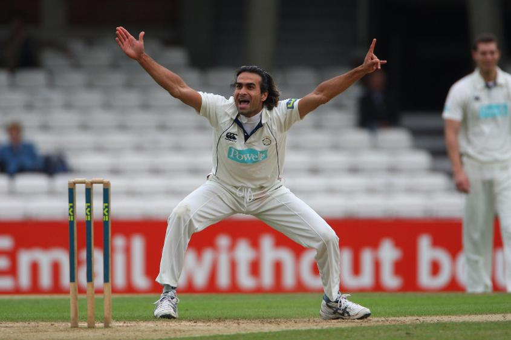

#CT17 Article
#CT17 Article
Tahir’s journey comes full circle
Cricketers’ journeys to the top are rarely straightforward, yet not many have been as arduous as Imran Tahir’s
Cricketers’ journeys to the top are rarely straightforward, yet not many have been as arduous, or passed through as many dressing rooms, as that taken by Imran Tahir.
Between representing Pakistan in the ICC Under-19 World Cup in South Africa in 1999 and playing for the Proteas against the land of his birth 18 years later as arguably the best white-ball bowler in world cricket, there have been many obstacles and setbacks, times when the cricket world has chuckled at him, but none of them have been enough to derail his self-belief nor dampen his famous wicket celebration.
Back in May 2005, the 26-year-old from Lahore was in his seventh season of English club cricket – a recent debutant for Pakistan A, still dreaming of picking up a county contract after a couple of failed trails – when an unexpected visitor turned up to watch him playing in rural Staffordshire. National coach Bob Woolmer came to reassure Imran that he was very much in his thoughts, and the leg-spinner duly played in a Greens-versus-Whites trial match that winter, then against the post-2005 Ashes England tourists, but full international honours never came.
Thumped by South Africa, inspired against India and within touching distance of victory over Pakistan only for hapless fielding to let the team down at the last: the tournament was a mixed bag for Sri Lanka. Ahead of the tournament, one victory from three matches would have been regarded as a qualified success given Sri Lanka is seventh in the ICC ODI Rankings. However, the magnificent victory against India promised so much more and were it not for Thisara Perera dropping Sarfraz Ahmed at a crucial juncture in the final group match against Pakistan, Sri Lanka would more than likely have progressed to the last four. That will be a bitter pill to swallow but a valuable learning experience for Angelo Mathews’s young side.
“I respected Bob a lot,” says Tahir, “and he really wanted to give me a chance to play international cricket. On the other side, time was going quite quick and I was worrying that I wasn’t going to achieve the goals I’d set for my life and my career.”
Nevertheless, it wasn’t all plain sailing from there. The slow process of qualification for South Africa, coupled with solid performances for Titans, had sent expectation levels among his new compatriots soaring. Here, finally, they thought, was the mystery spinner to complete the jigsaw, to turn the team of Smith, Kallis, Amla, De Villiers, Steyn, Morkel, Boucher et al into world cricket’s indisputable top dogs. But things didn’t work out. Not in Test cricket, anyway, culminating in a mauling at the hands of Michael Clarke and Michael Hussey in Adelaide in late 2012: 37-1-260-0, the most expensive wicketless match analysis in Test history.